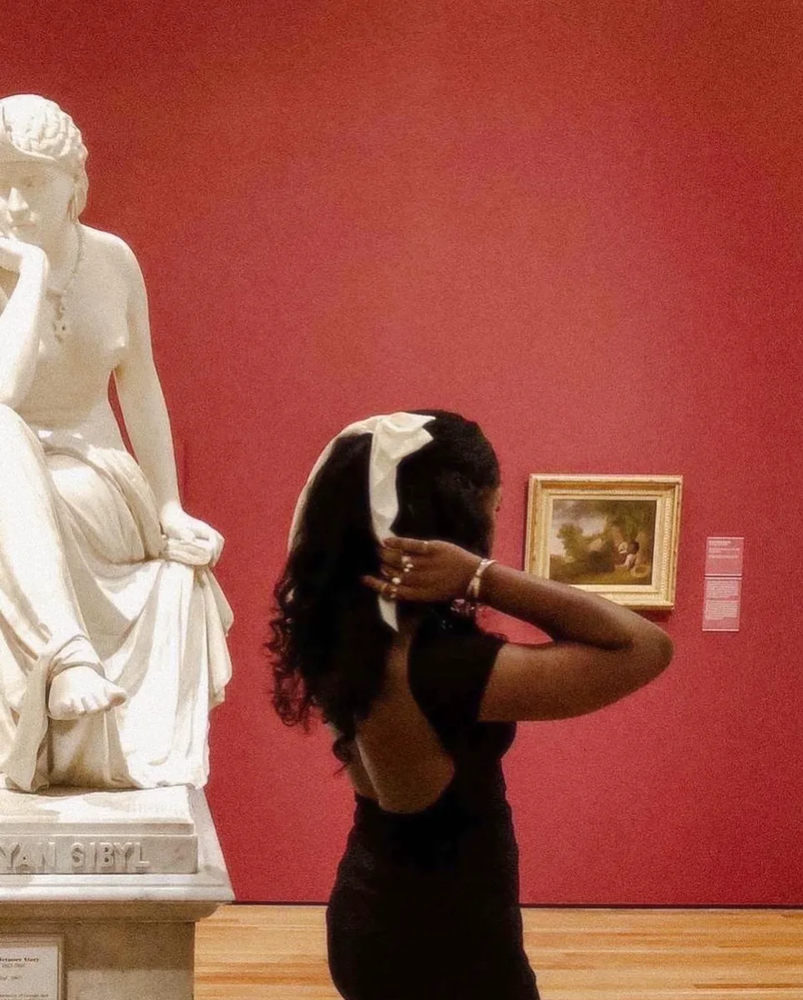
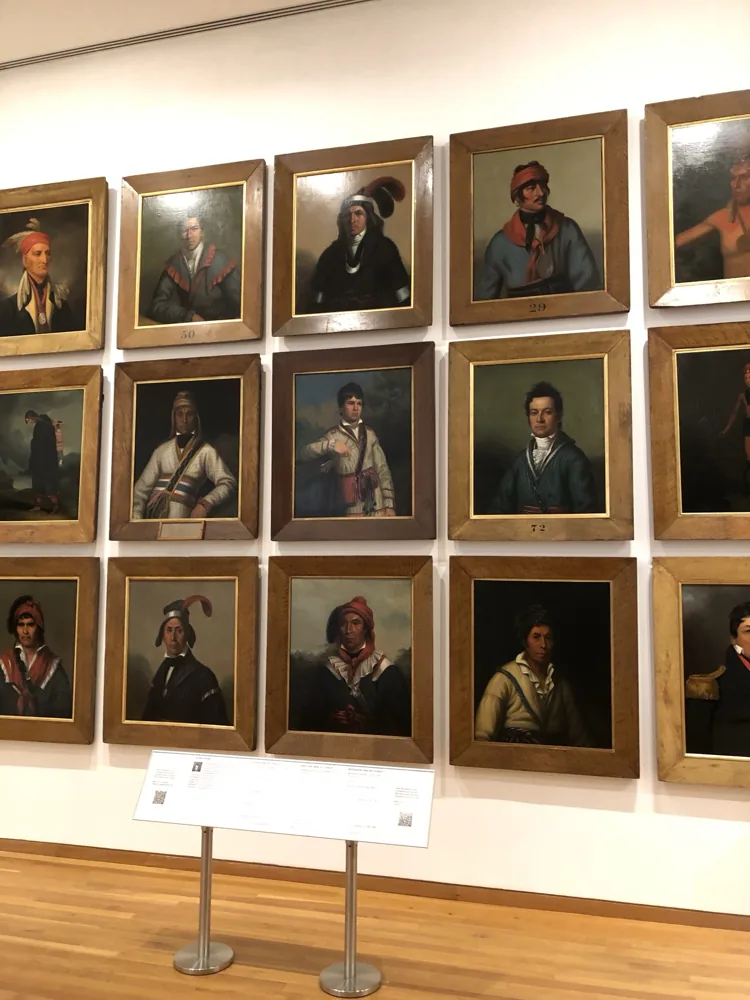
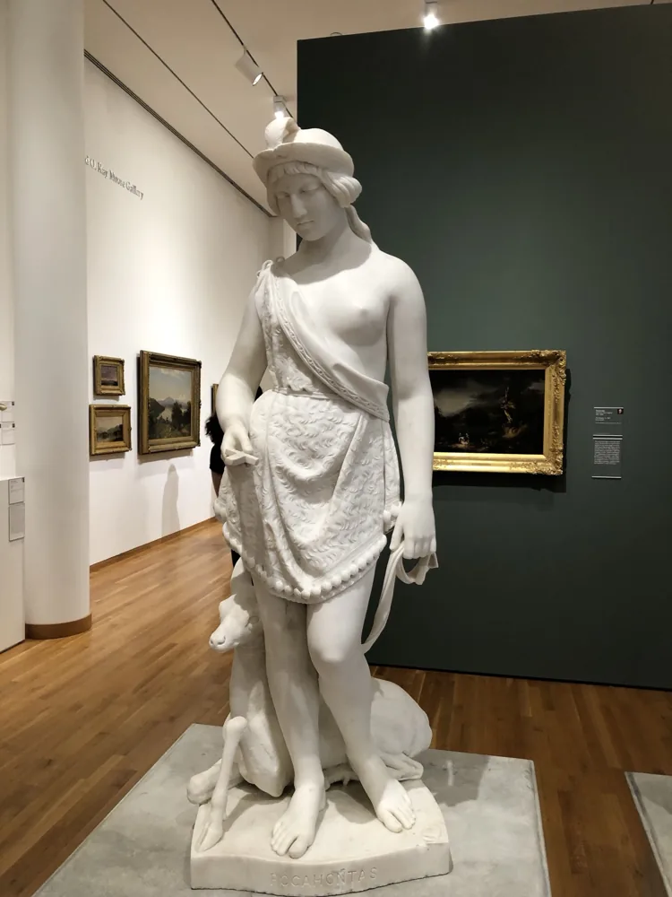

Gallery I
Product & Technology
Things I have built and designed. Keep scrolling to walk along the wall; select a frame to read its story.
View all projectsExperience
Where I’ve worked
Along the way, I’ve worked on product research, project planning, hardware and software integration, and testing.
Handshake AIAI Evaluation & Technical Research Analyst
Nov 2025 – present- Test how AI models handle technical questions, find where their reasoning breaks, and document corrections. How I work
News CorpAI Product Manager Intern
Aug – Oct 2025- Compared how news sites personalize with AI against TikTok and Spotify.
- Built five audience personas from 500+ survey responses and proposed three features. Case study
LOCITTeam Lead, senior capstone
Spring – Fall 2024- Led our four-person team, AZAD, from design through testing of a GPS necklace and companion app. Case study
Independent practiceDigital artist
Since childhood- Digital portraits, paintings and drawings. See the Playground
Education
Kennesaw State UniversityB.S. Computer Engineering, Cum Laude
Dec 2024
Communities
National Society of Black EngineersMember
Society of Women EngineersMember
African Students AssociationMember
About the curator
I like trying things.
I’m Dami, a computer engineer and artist based in Atlanta.
I’ll get curious about something, start learning it, and suddenly I have another project.
For a while, that made choosing a career hard. I enjoyed engineering, but I also liked thinking about how something should look, what it should do, and whether anyone would actually find it useful.
I’ve been drawing since I was a child, and it still shapes how I work. Art taught me to step back, look closely at the details, and think about things differently.
What’s stuck with me through all of it is how much I enjoy figuring out what something should do, working through the details with a team, and testing it until it works. I’m looking for opportunities in product, project engineering, and quality where I can do more of that.



Outside of work you can find me…
- watching anime
- taking photos
- painting digital portraits, see the Playground
- wandering through museums
- taking a good nap
Gallery II
The Playground
Select a piece to see it up close
Leave a doodle
A space for visitors to create
Skip the doodleDrawing needs a mouse, pen or touch. Doodles stay on your device; nothing is uploaded.